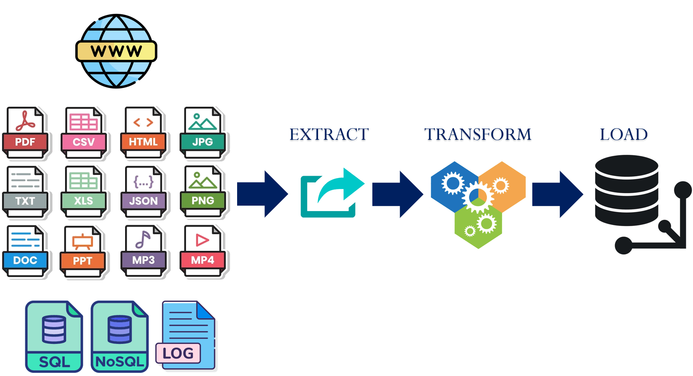
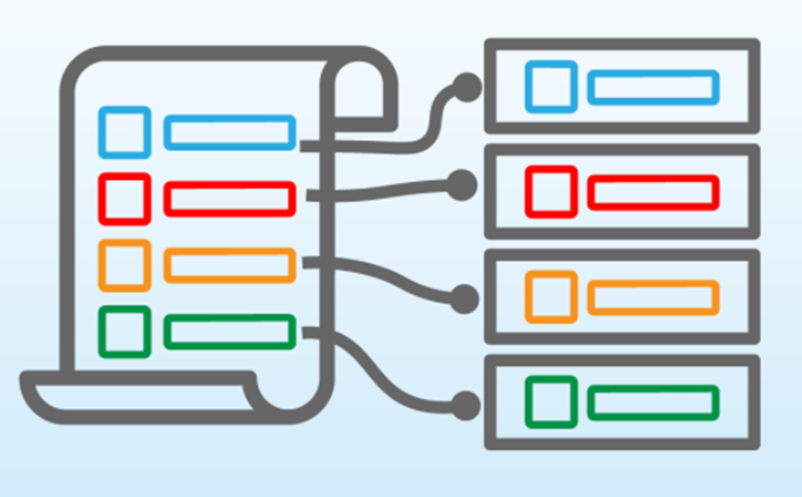
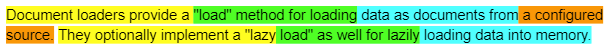

One of the most popular applications for an LLM is to be able to query a large amount of data using natural language. To do so, data is collected across a number of sources such as the web, local files in a number of different formats, and even structured databases. It is then sent through an ETL (Extract-Transform-Load) pipeline and loaded into a specialized vector database. This document loading process is shown below.

For a document querying application, the steps typically perform the following.
In this lab, we'll be experimenting with a variety of document loaders and transformations within LangChain that are used to build such document querying applications. This forms the foundation of a retrieval-augmented generation application in the following lab.
To begin with, change into the source directory containing the examples, create a virtual environment, activate it, and install the packages.
cd cs475-src/02*/07_RAG git pull uv init --bare uv add -r requirements.txt
The lab will load content from Portland State's website hosted on AWS's CloudFront. To access its content programmatically, the User-Agent header on requests must be set appropriately. For the loaders being used, this is pulled via an environment variable. Set the variable in the shell.
export USER_AGENT='PDXAcademicClient/gensec'To begin with, visit the following URL for the department and find the text that gives statistics for job placement and average salary. https://www.pdx.edu/academics/programs/undergraduate/computer-science
Then, right click on the page and attempt to find the text in the page's source.
In order to bring this context to an LLM, a document loader is required that will retrieve the page and selectively identify the relevant snippet to give to the model. LangChain provides an extensive library of document loaders. A full set of them can be found at: Document loaders | 🦜️🔗 Langchain. One of the basic loaders is AsyncHtmlLoader. This loader takes a URL or a list of URLs and asynchronously downloads them, saving them into a set of corresponding HTML documents. The code for loading a set of URLs into a list of documents and returning the raw HTML content of the first document is shown below.
from langchain_community.document_loaders import AsyncHtmlLoader
loader = AsyncHtmlLoader(["https://www.pdx.edu/academics/programs/undergraduate/computer-science", "https://codelabs.cs.pdx.edu"])
docs = loader.load()
print(f"Size of page: {len(docs[0])}")
print(f"Page content: {docs[0].page_content}")Running the above program results in the output below.
# Output
# Size of page: 118738
# Page content: <!DOCTYPE html>
# <html lang="en" dir="ltr" prefix="og: https://ogp.me/ns#">
# <head>
# <meta charset="utf-8" />
# <script async src="https://www.googletagmanager.com/gtag/js?id=UA-4991908-1"></script>
# <script>window.dataLayer = window.dataLayer || [];function gtag(){dataLayer.push(arguments
# ...The output reveals two issues with this approach. The first is that the size of a page is over a hundred kilobytes, a size that will be truncated by some LLMs and that leads to high token costs and poor performance. The second is that the page contains many functions and formatting elements that do not contribute to the semantic content of the page. An effective document loader is essential in extracting the relevant data out of a document. As a result, there are many open-source and proprietary loaders to choose from, as well as transformation packages to augment document loading.
One way of extracting information out of documents is to transform it. LangChain also provides a library of document transformers. For example, in our prior example, the HTML payload for the Portland State University site is generated from Drupal. As part of the page, a large amount of ancillary HTML and Javascript is included to implement the visual elements. For Drupal sites, the main semantic content for the page is contained within an <article> tag. We can take our initial document and transform it so that it only contains the content in this tag. We can then compare the two approaches using the program below. As the code shows, a simple question about the job placement is posed and query_page() will ask the LLM to answer it based on the content passed to it, timing the amount of time taken for the LLM to perform the task. We then pass query_page() both the original HTML as well as the transformed one.
from langchain_google_genai import GoogleGenerativeAI
from langchain_community.document_loaders import AsyncHtmlLoader
from langchain_community.document_transformers import BeautifulSoupTransformer
import time
llm = GoogleGenerativeAI()
def query_page(content):
print(f"Content size: {len(content)}")
print(f"Content [:100]: {content[0:100]}")
prompt = f"What percentage of graduates get jobs? Answer based on the provided context. \n Context: {content}"
start = time.time()
response = llm.invoke(prompt)
end = time.time()
print(f"Time elapsed: {end-start} seconds\nResponse: {response}")
loader = AsyncHtmlLoader("https://www.pdx.edu/academics/programs/undergraduate/computer-science")
docs = loader.load()
query_page(docs[0].page_content)
bs_tr = BeautifulSoupTransformer()
docs_tr = bs_tr.transform_documents(docs, tags_to_extract=["article"])
query_page(docs_tr[0].page_content)Run the program and examine the querying and timing results.
uv run 01_loaders_transformers.py

Previously, with the AsyncHtmlLoader, we loaded a raw HTML page that contained over 100 kilobytes of information. While some models allow large contexts, most models do not perform efficiently with too much input data. When handling large amounts of data, we must transform it or split it into more manageable chunks. Chunking is the process of splitting data into smaller constituent chunks.
One of the drawbacks of chunking is that one can lose the overall meaning of the information contained in the document being chunked, causing poor application behavior. Take for example the sentence below that describes lazy loading. It has been chunked into 7 chunks with each chunk color-coded separately:

If the application needs context about the lazy load feature, the chunks available will present a very limited understanding of what this sentence is trying to say. For example the quote "lazy load" appears across multiple chunks. When ineffective chunking strategies are employed, information loss can occur across page boundaries, paragraphs, or article sections. One way of ameliorating this is to allow chunks to overlap, with the aim of generating one chunk that encompasses the semantic meaning we're interested in retaining. Visit https://chunkviz.up.railway.app/. Copy and paste the text contents from the department's site in prior steps and experiment with chunk sizes until the entire text fits in 5 chunks.
There are many solutions to chunking that try to preserve coherent, semantically related groupings of text. One common solution is the RecursiveCharacterTextSplitter which attempts to break down the text blocks into smaller and smaller chunks based on typical text separation characters. Revisiting the AsyncHtmlLoader example, with a size of 100 kilobytes, simply passing the entire payload as the context is not ideal.
Consider the code below that uses the RecursiveCharacterTextSplitter to generate a set of document chunks from the original site. Each chunk is 10000 bytes long and a 1000 byte overlap is specified in case the tag is split between chunk boundaries.
from langchain_community.document_loaders import AsyncHtmlLoader
from langchain.text_splitter import RecursiveCharacterTextSplitter
loader = AsyncHtmlLoader("https://www.pdx.edu/academics/programs/undergraduate/computer-science")
docs = loader.load()
text_splitter = RecursiveCharacterTextSplitter(chunk_size = 10000, chunk_overlap=1000)
docs_splits = text_splitter.split_documents(docs)
print(f"Split {len(docs[0].page_content)} byte document into {len(docs_splits)}")The code then finds all chunks that contain the string 'job placement' in them and then iterates through them to query the LLM as before
article_chunks = [i for i in range(len(docs_splits)) if 'job placement' in docs_splits[i].page_content]
for i in article_chunks:
print(f"Found chunk {i} with 'job placement' in it. Sending to LLM")
query_page(docs_splits[i].page_content)Run the program.
uv run 02_chunkers.py
In these examples, we use basic chunking approaches and assume the content being split is generic text. LangChain, however, provides splitters that utilize semantic information about the document being processed (such as HTML) to perform the chunking operation. More information on them can be found here: Text Splitters | 🦜️🔗 Langchain
The basic loader shown previously allows us to download a single web page. It has several drawbacks: it requires us to provide all URLs ahead of time and it parses the entire HTML result, often including content we do not wish to include in our context. Suppose the application we want to build requires multiple pages of information from a single website to be downloaded and transformed so that they can be queried effectively. One could write a web scraper and then use it in conjunction with the prior loader and transformer code, however, due to how common this pattern is, LangChain implements a recursive URL loader (RecursiveUrlLoader) that can be used instead. The loader can be configured with a maximum depth to recurse as well as a custom extraction function that can perform the same operation that the prior BeautifulSoup transformer performed. In the context of the ETL framework the RecursiveUrlLoader is extracting the data from the given URL and then the extractor is transforming it.
from langchain_community.document_loaders.recursive_url_loader import RecursiveUrlLoader
from bs4 import BeautifulSoup
def get_article(page):
article = BeautifulSoup(new_page, "html.parser").find('article')
if article:
return(article.get_text())
loader = RecursiveUrlLoader(
url = "https://web.cs.pdx.edu",
max_depth = 2,
extractor=lambda x: get_article(x)
)
docs = loader.load()
print(f"Downloaded and parsed {len(docs)} URLs")Manually activate the Python environment in order to run this code with the -i flag to allow yourself to drop into the Python interpreter at the end of the program and access the documents that have been downloaded.
uv run python3 -i 03_recursive_loader.py
Run the following to list all of the URLs that have been downloaded:
for d in docs:
print(f" URL: {d.metadata['source']}")Then, peek at a document to see the contents that have been loaded.
docs[1].page_content
docs[1].metadata['source']The pages from the web site have been retrieved and processed in a way that allows it to be utilized in a document querying effectively. Note that this can form the basis of a custom document loader as described in LangChain's site: Custom Document Loader | 🦜️🔗 Langchain. Exit the interpreter via Ctrl+d.
LLMs utilize the concept of tokens when working with and processing text. Tokenization is the process by which text is mapped into numeric representations that can be utilized by the LLM. There are several different options for performing tokenization based on the context the LLM is being used in. For example, a tokenizer for working with Python, might tokenize based on keywords of the language, while a tokenizer for the English language might employ "sub-word tokenization", breaking words down into suffixes, prefixes, and compound words in order to reduce the size of the vocabulary and thus, the computational complexity of the language processing task. While LangChain application developers may simply utilize the default tokenizers built into libraries, tweaking the tokenizer may allow an application to perform better feature extraction, semantic similarity matching, and context understanding.
In this lab, we'll experiment with several basic tokenizers. The code below instantiates 2 tokenizers from NLTK, a popular tokenization package. The first is a regular expression tokenizer that simply splits the string by white space. The second is a word punctuation tokenizer that separates the punctuation marks from the words themselves, allowing a particular word to be represented by a single token, regardless of whether it is directly followed by punctuation. Finally, the third is a sub-word, byte-pair encoding tokenizer that was initially developed to compress English text, but is now commonly used to encode it for a language model. The program in the repository uses the code below to interactively tokenize a sentence that is given by the user using different tokenizers.
from nltk.tokenize import WordPunctTokenizer, RegexpTokenizer
import tiktoken
sentence = "Hello! How are you doing?"
regexp = RegexpTokenizer(r'\s+', gaps=True)
regexp_tokens = regexp.tokenize(sentence)
wordpunct = WordPunctTokenizer()
wordpunct_tokens = wordpunct.tokenize(sentence)
encoding = tiktoken.encoding_for_model("gpt-3.5-turbo")
numerical_representation = encoding.encode(sentence)
tik_tokens = [encoding.decode_single_token_bytes(token).decode('utf8') for token in numerical_representation]Run the program:
uv run 04_tokenizers.py
Test the sentences below to show how punctuation is handled across the tokenizers.
What's the best way to tokenize a string in Python? For Ludlum, what's stronger than fear? #Hope
Test the sentences below to demonstrate how sub-word tokenization is handled across the tokenizers.
Experimenting aimlessly with LangChain is interesting. Supercalifragilisticexpialidocious I got tripped up figuring out tokenization
Generate a sentence of your own to tokenize.
Since LLMs take in tokens as input and generate tokens as output, the billing structure for models is typically done based on tokens. The function below shows a basic way of estimating the token counts and costs for a model. Because token costs change frequently, you will need to update the cost in the code by visiting https://ai.google.dev/pricing and viewing the token cost for the model you are using for the paid tier:
def calculate_completion_cost(query):
# Cost per million tokens
INPUT_TOKEN_COST_PER_MILLION = ...
OUTPUT_TOKEN_COST_PER_MILLION = ...
# Cost per token
Per_token_input_cost = INPUT_TOKEN_COST_PER_MILLION / 1000000
Per_token_output_cost = OUTPUT_TOKEN_COST_PER_MILLION / 1000000
prompt_tokens = llm.get_num_tokens(query)
response = llm.invoke(query)
output_tokens = llm.get_num_tokens(response)
total_cost= prompt_tokens * per_token_input_cost + output_tokens * per_token_output_costAs is seen in the code, LangChain enables token counting for Gemini by using the simple function get_num_tokens. Other integrations with LangChain, such as Anthropic and OpenAI offer similar endpoints, and also have token counts as part of chat completion responses. Once the tokens are counted, then the cost is calculated by using the published rate of the input and output tokens for the model. As with most models, output token costs will be more expensive.
The program in the repository takes an input from the user, sends it to the LLM, then calculates the token costs. Based on the pricing for the model you are using, update the token costs within the program:
uv run 05_token_costs.py
Try different queries with output lengths that vary in order to see how it affects the total cost.
In 1000 words give a detailed response on why tokenization is important for NLP tasks and a history of different tokenization strategies Write a haiku about Portland State University
Generate a prompt of your own that will output a paragraph of output.
After tokenization, input data is often passed through an embedding model that maps it into a weighted vector that is intended to capture the semantic meaning of the input in a multidimensional space. A good embedding strategy will preserve key features of the data, such as context, spatial structure, and semantic meaning. Input data with similar characteristics will be closer in vector space than data with dissimilar characteristics. There are many embedding functions available, and each major LLM provider will have their own embedding methodology. Each embedding function limits the size of the input data being embedded and has a fixed size output embedding size. For example, one popular embedding model limits inputs to the embedding function to 8192 tokens and outputs a vector of 1536 dimensions. Ultimately, the embedding function will reduce the complexity of a document into its key features, represent those features numerically as vectors, and then store them in the database.
The embeddings themselves are generated by embedding models. LangChain has many useful abstractions for working with different LLM providers to create embeddings for VectorStores. The code below calls an embedding model with an input sentence and outputs the number of dimensions that the vector produced by the embedding model produces and its initial values.
from langchain_google_genai import GoogleGenerativeAIEmbeddings
embeddings=GoogleGenerativeAIEmbeddings(model="models/embedding-001", task_type="retrieval_query")
phrase = "This is a test string."
vector = embeddings.embed_query(phrase)
print(f"Embedding length: {len(vector)}")
print(f"Embedding [:10]: {vector[:10]}")Running the code produces the result below:
# Embedding length: 768 # Embedding [:10]: [0.033590235, -0.0420321, 0.009730149, -0.028902058, 0.060474258, 0.05018104, 0.026482714, -0.043165352, 0.0033995877, 0.034087837]
The code above uses Google's embedding model, but many other alternatives can be dropped in place of it. A leaderboard for comparing embedding models can be found here.
To calculate the similarity of a pair of text, one can take the vectors produced by the embedding model and calculate the distance between them. Two ways of doing so are via Euclidean and Cosine distances. In both cases, the shorter the distance, the more similar the input texts are deemed to be. The code below shows an example of a function that takes two input strings and calculates their Euclidean and Cosine distances away from each other.
def calculate(s1, s2):
s1vec = embeddings.embed_query(s1)
s2vec = embeddings.embed_query(s2)
euclidean_distance = math.sqrt(sum((x - y) ** 2 for x, y in zip(s1vec, s2vec)))
print(f"Euclidean distance is: {euclidean_distance}")
cosine = cosine_similarity([s1vec],[s2vec])
print(f"Cosine distance is: {1-cosine[0][0]}")Test the embedding model by running the program in the repository that generates vector distances from a particular string. Use 2 different strings: one that is extremely close to the given text string and one that is far away from it.
uv run 06_embeddings.py